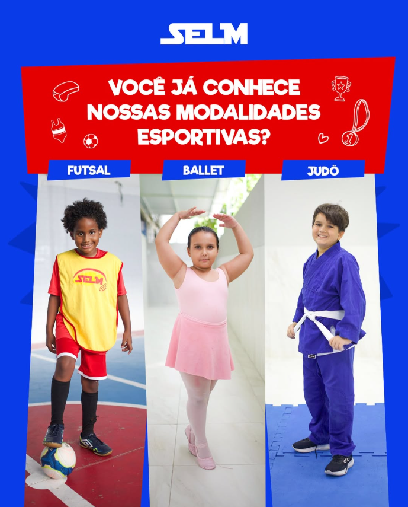

Inicio
Niveis de ensino
Infantil
Fundamental
Médio
.png)
Unidades
Instagram
.png)

Balé
O balé é uma das atividades mais completas e enriquecedoras, proporcionando aos alunos uma combinação de arte, disciplina e expressão corporal. Com aulas cuidadosamente estruturadas para atender diferentes níveis, desde iniciantes até avançados, os alunos são guiados por professores qualificados que os auxiliam no desenvolvimento da técnica, postura, coordenação motora e musicalidade. Os treinos incluem uma série de exercícios fundamentais para a formação do bailarino, como alongamentos para ganho de flexibilidade, práticas de equilíbrio para controle corporal, fortalecimento muscular para aprimorar os movimentos e aprendizado de coreografias que estimulam a criatividade e a interpretação. A dança exige dedicação e concentração, ajudando os alunos a adquirirem uma maior consciência corporal e uma melhor conexão com a música, tornando cada movimento uma verdadeira expressão artística.
Ao longo do ano, a escola promove apresentações e eventos especiais que oferecem aos alunos a oportunidade de mostrar seu talento e dedicação no palco. Essas apresentações são momentos únicos de superação e realização, onde os bailarinos vivenciam a emoção de dançar para um público e compartilham todo o conhecimento adquirido durante as aulas. Os espetáculos são planejados com muito cuidado, envolvendo figurinos, iluminação e coreografias pensadas para destacar a evolução de cada aluno. Além disso, participar dessas apresentações ajuda a desenvolver a autoconfiança, a expressividade e o domínio de cena, elementos essenciais para qualquer artista. O balé não é apenas uma atividade extracurricular, mas sim uma jornada transformadora que une técnica, arte e emoção. Se você deseja explorar o mundo da dança e expressar-se por meio do movimento, venha participar das nossas aulas e descubra todo o encanto e a magia do balé.